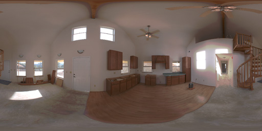
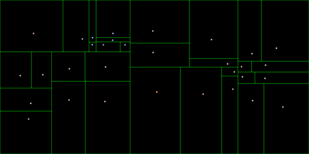
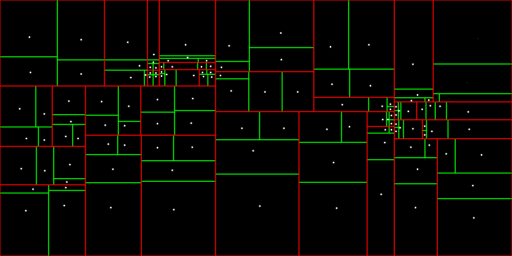

Light Map Gen Diagnostic Images Example
This example is specifically for median cut sampling.
Spherical HDR (lat/long)

Original HDR light map image in latitude/longitude format.
Median cut, 32 samples

Green box shows the sample area, then dot shows the actual final sample
location and color.
Command line: lightMapGen -in
Livingroom_01.tif -s 32 -normalize -writeDiagImages
Median cut, 32 samples with 4 interleave levels

As you can see, each of the 32 sample areas (now red boxes) have now been
further broken down into 4 separate interleave levels (green boxes).
Please note, I recommend more than 4
interleave levels in this case, 4 were chosen for clarity.
Command line: lightMapGen -in Livingroom_01.tif -s 32 4 -normalize
-writeDiagImages
-Jeremy Pronk 10/08/2005
www.happiestdays.com